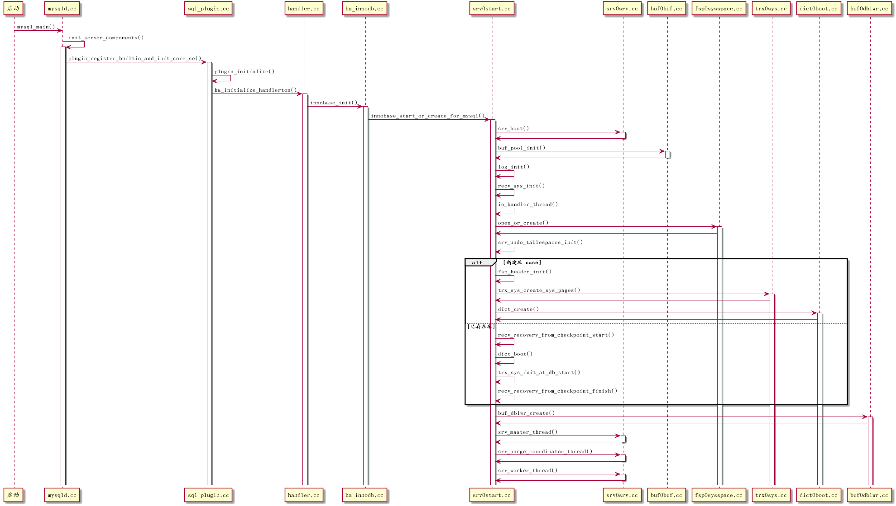

1 innodb插件启动过程
1.1 类调用流程图

2 说明
2.1 innobase_init()
主要是初始化一些全局变量 ,为启动作准备
2.2 innobase_start_or_create_for_mysql()
主要完成 InnoDB启动过程
2.3 srv_boot()
包含有两个重要方法 :
- srv_general_init(): 初始化同步控制系统,内存管理 系统,日志 。。。
- srv_init(): 初始化后台线程同步控制系统
2.4 buf_pool_init()
InnoDB的Buffer Pool初始化,它是根据系统配置参数innodb_buffer_pool_size (InnoDB Buffer Pool总大小)及innodb_buffer_pool_instances(InnoDB Buffer Pool实例个数)来初始化的
2.5 log_init()
初始化日志系统,这是关于整个InnoDB存储引擎所有日志相关的初始化工作
2.6 recv_sys_init()
初始化日志恢复系统.当数据库异常关闭，再次启动时，会用初始化后系统存储，解析日志内容并做恢复
2.7 io_handler_thread()
创建IO异步线程,共创建innodb_write_io_threads+innodb_read_io_threads个 是当上层对Buffer Pool发出读写请求时,主操作线程会将这个操作交给异步IO线程来做，读写操作不同之处是 读操作需要在请求之后等待之后异步读的完成 ,才能继续后面的操作(只有读到完整数据，才能继续后面的工作) 而写操作不需要等待及通知 ,InnoDB不会对单独页面 写操作就不需要等待及通知了,
只有在做检查 点或批量刷盘操作时，才会等待这个批量操作完成 .只有完成 了,确实写入文件中，才能将对应的日志废弃.
2.8 open_or_create()
打开或创建系统数据文件(ibdata),如果文件存在,则打开，并且读取一些文件头信息,比如LSN,如果文件不存在,则会创建新文件 . 此时相当初始化一个新的数据库实例.这个函数执行完后，就可以知道当前是在初始化一个新数据实例还是在启动一个已存在的数据库
2.9 srv_undo_tablespaces_init()
mysql5.6引入新功能:srv_undo_tablespaces_init,主要涉及的模块是回滚段的存储 .在5.6之前回滚段被强制分配在ibdata,如果一个事务很大，长期不提交，这个事务回滚段就不能释放空间
根据上面可能出现的问题，引入了回滚段分离出来使用单独文件存储功能,innodb_undo_tablespace来控制,如果设置为0，则使用5.6之前的方式，所有回滚段在ibdata中
2.10 fsp_header_init()
作用是在系统文件ibdata的一开始分配空间,以便可以存储管理一些系统模块,比如事务系统,Inode页面,回滚段系统页面及数据字典管理页面，这些页面者存储在ibdata头几个页面中.
2.11 trx_sys_create_sys_pages()
上面提到事务系统存储初始化，事务系统使用页面为5号页面，也就是ibdata的第6个页面，这个页面存储一个比较重要的东西就是事务ID，因为事务ID在MVCC及事务的ACID管理中很重要，并且不能重复，所以这个值被固化在这个页面中
2.12 dict_create()
新建库,需要新的数据字典.
首先分配一个ibdata文件中的第8个页面，用来存储数据字典使用到的几个ID值，分别是ROWID，表ID，索引ID，当前最大的表空间ID等。这些与前面事务ID比较类似.所以有相同的处理.然后为每一个系统表创建一个B树，用来存储在系统启动之后，用户创建的数据库对象，比如表，索引等，最后通过调用函数dict_boot反所有系统表加载到内存中，以便后面处理用户 的DDL请求。这些表结构是常驻内存的，结构不会被修改。
2.13 recv_recovery_from_checkpoint_start()
简称recovery_start,主要工作是扫描日志文件,将需要恢复的日志一块一块扫描出来，然后分析其完整性,将完整的日志按照页面号归类并且做REDO操作，这部分是InnoDB日志实现的核心部分。
2.14 dict_boot()
这里与新建库不同的是,这里只将所有系统表加载到内存中，而不会创建数据库字典及初始化字典存储页面
2.15 trx_sys_init_at_db_start()
用来初始化事务系统,并且将所有回滚段中需要处理的事务加载起来,包括INSERT回滚段及UPDATE回滚段,用来为后面操作做准备。因为马上要执行的是 recv_recovery_from_checkpoint_finish,这个函数主要作用是执行回滚操作(UNDO),从函数recovery_start开始，到recovery_finish为止,执行顺序是有逻辑关系的,首先 recovery_start是纯物理操作,因为它是完成的REDO操作，将所有没有写入到数据页面的日志重做一遍，后面在执行trx_sys_init_at_db_start()函数时，需要加载所有需要处理事务，要找到每个事务的回滚段.这些数据需要在恢复完成后才可以读取，因为在这之前，这些回滚段的页面和数据页面一样也是通过Buffer Pool来读写的，并不能保证这些数据的正确性
2.16 recv_recovery_from_checkpoint_finish()
处理的是逻辑的操作,因为回滚操作是针对每一个事务而言，所以是逻辑的，需要在trx_sys_init_at_db_start执行之后,才能执行 recovery_finish(),在执行 recovery_finish时,需要保证回滚段数据的正确性,因为回滚段的读写也是通过Buffer Pool来实现的,所以必须要在REDO恢复完成之后,回滚段的数据才是完整的，才能做回滚操作.
2.17 buf_dblwr_create()
不管新建库还是已打开存在的库，都需要做,首先是创建两次写缓存(double_write),对应函数为buf_dblwr_create(),它在InnoDB中是个比较具有InnoDB特色的功能,同时也是一个用来保证正确性很重要的功能.
2.18 srv_master_thread()
每隔一秒钟进行一次后台循环，在空闲与繁忙阶段分别做不太相同的事情，但其根本而方是基本相同的,包括: 后台删除废弃表，检查日志空间是否足够，后台合并Insert Buffer缓存，日志刷盘,做检查点.
2.19 srv_purge_coordinator_thread()和 srv_worker_thread()
这两个线程通过互相配合,来完成整个InnoDB系统的PURGE操作,它们类似生产者与消费者关系,第一个线程为生产者，后面的工作线程是消费者，但这个需要通过配置参数purge_threads,所有PURGE操作将由调度线程来完成，如果是创建多个工作线程，调度线程在产生任务之后，会从所有工作线程中找到空闲一个，然后交给它来处理这个任务